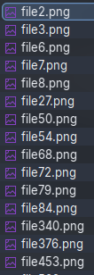
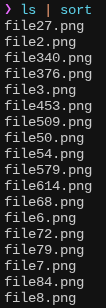
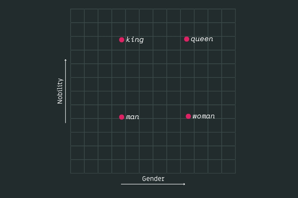

You may have heard of the legendary naturalSort in JavaScript.
/*
* Natural Sort algorithm for Javascript - Version 0.7 - Released under MIT license
* Author: Jim Palmer (based on chunking idea from Dave Koelle)
*/
function naturalSort (a, b) {
var re = /(^-?[0-9]+(\.?[0-9]*)[df]?e?[0-9]?$|^0x[0-9a-f]+$|[0-9]+)/gi,
sre = /(^[ ]*|[ ]*$)/g,
dre = /(^([\w ]+,?[\w ]+)?[\w ]+,?[\w ]+\d+:\d+(:\d+)?[\w ]?|^\d{1,4}[\/\-]\d{1,4}[\/\-]\d{1,4}|^\w+, \w+ \d+, \d{4})/,
hre = /^0x[0-9a-f]+$/i,
ore = /^0/,
i = function(s) { return naturalSort.insensitive && (''+s).toLowerCase() || ''+s },
// convert all to strings strip whitespace
x = i(a).replace(sre, '') || '',
y = i(b).replace(sre, '') || '',
// chunk/tokenize
xN = x.replace(re, '\0$1\0').replace(/\0$/,'').replace(/^\0/,'').split('\0'),
yN = y.replace(re, '\0$1\0').replace(/\0$/,'').replace(/^\0/,'').split('\0'),
// numeric, hex or date detection
xD = parseInt(x.match(hre)) || (xN.length != 1 && x.match(dre) && Date.parse(x)),
yD = parseInt(y.match(hre)) || xD && y.match(dre) && Date.parse(y) || null,
oFxNcL, oFyNcL;
// first try and sort Hex codes or Dates
if (yD)
if ( xD < yD ) return -1;
else if ( xD > yD ) return 1;
// natural sorting through split numeric strings and default strings
for(var cLoc=0, numS=Math.max(xN.length, yN.length); cLoc < numS; cLoc++) {
// find floats not starting with '0', string or 0 if not defined (Clint Priest)
oFxNcL = !(xN[cLoc] || '').match(ore) && parseFloat(xN[cLoc]) || xN[cLoc] || 0;
oFyNcL = !(yN[cLoc] || '').match(ore) && parseFloat(yN[cLoc]) || yN[cLoc] || 0;
// handle numeric vs string comparison - number < string - (Kyle Adams)
if (isNaN(oFxNcL) !== isNaN(oFyNcL)) { return (isNaN(oFxNcL)) ? 1 : -1; }
// rely on string comparison if different types - i.e. '02' < 2 != '02' < '2'
else if (typeof oFxNcL !== typeof oFyNcL) {
oFxNcL += '';
oFyNcL += '';
}
if (oFxNcL < oFyNcL) return -1;
if (oFxNcL > oFyNcL) return 1;
}
return 0;
}
If you haven’t, this function compares two strings and determines their ‘natural’ ordering. For example, Monday comes before Friday, file2 before file10, and so on.
While there’s no single correct natural ordering, they all aim to order strings based on what makes sense for humans.

Natural sort

Lexical sort
But what if we could sort any word without having to program every class of words and edge cases like naturalSort above? What about words like low, medium, high? heaven, earth, hell?
Surely LLMs are the right hammer for this job?
Naturalest sort
Using LLMs may be the naturalest sort, but I was looking for something lighter than that. Surely, for the narrow use case of sorting for human sensibility, LLMs are overkill.
Contrary to the clickbait title, this post is not about LLMs per se. It’s more about an experiment in making a lighter sorting than LLM-sort. But before that, let’s set a benchmark with vibesort.sh.
❯ ./vibesort.sh cases
Input: file1,file10,file2
Output: {"sorted":["file1","file2","file10"]}
Input: low,high,medium
Output: {"sorted":["low","medium","high"]}
Input: heaven,hell,earth
Output: {"sorted":["heaven","earth","hell"]}
Input: monday,friday,tuesday,sunday
Output: {"sorted":["monday","tuesday","friday","sunday"]}
Can we do that without LLMs? Let me introduce a less natural natural sort.
Naturaler sort
The idea behind this is to use word embeddings, or vectors that represent words in a conceptual space. I wondered if these embeddings could even be sortable. I set out to experiment.
Intro to word embedding arithmetic
Embeddings are basically high-dimensional vectors (> 300 coordinates) that describe word meanings. The key aspect is that words with similar meanings have vectors that are also close in the embedding space or conceptual space.
Comparing two words is as ‘simple’ as taking the dot product of their vectors.
Since they are vectors, you can do other kinds of math on them. A popular cherry-picked example is King - Man + Woman = Queen.
 This is the embedding projected to 3D using principal component analysis, with a few interesting words highlighted.
This is the embedding projected to 3D using principal component analysis, with a few interesting words highlighted.
The main idea is that individual dimensions encode specific meanings or features. In the King - Man + Woman = Queen example, there could be a Gender dimension or a Nobility dimension that makes the arithmetic work.

Man, woman, king, and queen projected to 2D using principal component analysis (not-to-scale illustration only). I made up the labels for the two resulting dimensions.
The main hypothesis: Could there be an order dimension that encodes the natural order of words? Is there an order vector that describes the general direction of going from Monday to Tuesday as well as low to medium to high?
The search for the order vector
Naive solution: Just subtract a small-sounding word (say, "smallest") from a big word ("largest") and use the difference vector as the direction to order words in.
orderVec = word2vec("largest") - word2vec("smallest")
Projecting the input words onto this order vector should give us a straightforward linear ranking of the words. Btw I’m using word2vec from Google to get word embeddings.
// compute the order direction vector
const orderDir =
normalize(word2vec("largest") - word2vec("smallest"));
// get the embeddings of the input words
const vecs = words.map(word2vec);
// rank each word according to the order vector
const ranks = Object.fromEntries(vecs.map((vec, i) =>
// the rank of each word is
// its dot product against the 'order vector'
[words[i], dot(vec, orderDir)]
));
// sort words according to the order vector ranking!
words.sort((a, b) => ranks[a] - ranks[b]);
Does it work? Let’s visualise an example:
The above diagram shows the word embedding vectors for tiny, small, … huge collapsed onto a single line. This is the line from "smallest" to "largest".
Sorting words by the values of their projections on the smallest-to-largest direction seems to produce a ‘natural’ sort!
It can even sort different kinds of semantic magnitudes, not just sizes per se, a couple of examples:
It starts breaking down as you stray into words not directly related to size or magnitude:
When sorting words completely unrelated to the concept of size/magnitude, it completely fails.
The above example fails because our chosen anchor words "smallest" and "largest" have nothing to do with the love-hate scale. Well, I guess it’s still being sorted in a way, maybe from the least intense to the most intense emotion? so there’s that.
Other anchor words
What if we sort it by different order vectors based on other anchor words? How about "negative" to "positive"?
"good" and "bad"?
An order vector that can sort hate and love is "worst" to "best".
The lesson here is that there are many potential order vectors, many dimensions to sort words in. One may make sense for a given set of input words, and another for a different set. We need to choose the right order direction vector per set of words. But how do we choose, and from what order vector choices?
The search for multiple order vectors
With the help of an LLM, I generated a bunch of anchor pairs for the algorithm to choose order vectors from.
const anchors = [
["least", "most"], ["low", "high"], ["light", "heavy"],
["worst", "best"], ["empty", "full"], ["uncertain", "certain"],
["quiet", "noisy"], ["back", "forward"], ["unusual", "typical"],
["dull", "sharp"], ["tiny", "huge"], ["frozen", "boiling"],
["poverty", "wealth"], ["left", "right"], ["small", "big"],
["early", "late"], ["young", "old"], ["start", "finish"],
…
];
Before using them, I clustered them to reduce the amount of choices to process.
Clustering the order vectors revealed a nice pattern. That there were two major clusters: one seemingly related to magnitude, and the other like a general ‘value’ (?) direction.
CLUSTER SIZE MEMBERS
'value' [61] narrow→wide, closed→open, down→up, low→high,
lowest→highest, below→above, weak→strong,
weakest→strongest, inferior→superior, sluggish→rapid,
dim→bright, worthless→valuable, boring→exciting, …
'magnitude' [40] least→most, few→many, back→forward, off→on,
calm→violent, quiet→noisy, dry→wet, rural→urban,
basic→advanced, plain→elaborate, cheap→expensive,
free→costly, easy→difficult, simple→complex,
trivial→challenging, smallest→largest, …
'sequence' [12] first→last, young→old, new→ancient, fresh→stale,
beginning→end, initial→final, start→finish,
minority→majority, inner→outer, cool→warm, …
'frequency' [10] before→after, none→all, never→always, seldom→often,
opening→closing, rare→common, uncertain→certain, …
'size' [9] minimum→maximum, affordable→luxurious, …
'space' [5] particular→universal, internal→external, …
Note: I manually labelled the clusters above. Then I picked the top 4 clusters and averaged them, and saved the averages as the final 4 order vectors to choose from.
To choose an order vector, we pick the one that separates the words the most.
// orderVecs contains the cluster averages of the top 4 clusters
const ranked = orderVecs
.map(orderVec => {
// project the words onto this order vector
const scores = wordVecs.map(v => dot(v, orderVec));
// calculate the spread
const spread = Math.max(...scores) - Math.min(...scores)
return { orderVec, spread };
})
// sort by spread
.sort((a, b) => b.spread - a.spread);
// get the order vector that most spreads the words
orderVec = ranked[0].orderVec;
If you want to see the actual values of the final order vectors, check this out.
The algorithm can now choose to sort words based on the best fit order direction. For example, these particular words use the magnitude vector:
The following words fall into the value vector, the good/bad axis:
Here are some words sorted by the sequence vector:
Interestingly, the particular metals bronze, silver, and gold are sorted as medals in first, second, and third places instead of increasing value. The choice of order vector being the sequence vector explains this.
Ironcally, the ordinals aren’t quite correct:
While the choice of order vector seems correct, there’s something wrong with "fifth". The 2D plot via principal component analysis (PCA) reveals an interesting pattern. Even though the ordinals appear to maintain a clear sequence and shape in conceptual space, they change directions halfway through.
The sequence vector may have only captured the initial direction of the ordinals. Indeed the word "first" is explicitly included in the sequence cluster as the "first","last" anchor pair, as well as synonyms/neighbors like "initial" and "early".
The frequency vector is the weakest of the top 4 clusters, but I included it to squeeze some more coverage:
Limitations
Now, let’s look at the obvious failure cases:
Days of the week and months supposedly have obvious and logical sequences (or not, is it Sunday or Monday for the start of the week?) but these linear projections don’t show it.
Let’s look at the 2D projections:
The days are clustered more strongly by weekday and weekend. Maybe if we sorted by polar coordinates…
The months reveal another limitation:
Even ignoring May, months aren’t arranged in the conceptual space as expected
The word "may" can mean different things. Word embeddings alone cannot capture the specific sense of the word within the context of the rest of the input words. Additional processing should be done to disambiguate the 5th month of the year "may" from the expression of possibility "may".
While the solution works in principle, there are many blind spots and edge cases to worry about. I explored a few more variants but the clustered order vectors was the best performing.
Alternatives considered
What if we just fit a line through the words, and use that as the order vector? Eliminate the bias of human curated anchor words.
It actually got more of the ordinals correctly with just a line fit!
Note that there is a 50% chance for the order to flip because the direction is arbitrary. Two opposite vectors represent the same line. The algorithm could choose either.
Days of the week are hopeless, or is it?
Rings in conceptual space
Another variant was to use polar coordinates to sort. The idea is that days of the week are cyclical and would form a ring in conceptual space.
Almost there! What about months?
Removing the "may" outlier:
Without May, it’s actually a ring! The starting element is arbitrary when sorting by angle but if you trace it, the order is almost correct! if not for November.
There is definitely some value in refining the meaning of each word in context before doing the sorting. I haven’t looked into that direction yet.